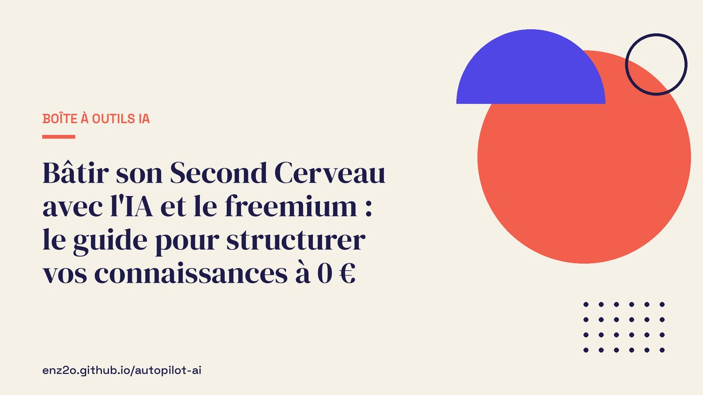

Bâtir son Second Cerveau avec l'IA et le freemium : le guide pour structurer vos connaissances à 0 €
2026-11-22
Article contenant des liens affiliés.

Entre les articles sauvegardés dans les favoris, les notes vocales prises à la hâte et les dizaines d'onglets ouverts en permanence dans le navigateur, l'infobésité est le fléau moderne des freelances, des étudiants et des créateurs de contenu. Nous accumulons une quantité phénoménale d'informations chaque jour, mais au moment de rédiger un mémoire, de préparer une proposition commerciale ou d'écrire un article de fond, l'inspiration stagne et les données restent introuvables.
C'est pour résoudre ce problème qu'a émergé la méthode du Second Cerveau : un système externe centralisé pour capturer, organiser et restituer la connaissance. Aujourd'hui, l'alliance entre la méthodologie de gestion des connaissances et l'intelligence artificielle gratuite ou freemium permet d'ériger un système d'apprentissage et de production d'une efficacité redoutable, sans débourser le moindre centime.
Voici le guide pas à pas pour bâtir votre propre Second Cerveau assisté par l'IA et libérer votre esprit pour ce qui compte vraiment : la réflexion stratégique et la création.
1. La capture fluide : ne plus jamais laisser échapper une idée
La première cause de surcharge mentale est le fait d'utiliser sa mémoire vive pour retenir des tâches ou des idées volantes. Un Second Cerveau efficace repose sur une capture instantanée et sans friction.
Les outils freemium recommandés
- La dictée vocale enrichie par l'IA : Si vous êtes souvent en déplacement, la prise de note manuscrite ou tapée au clavier peut être un frein. Utilisez des applications de dictée vocale intégrant Whisper (le modèle de transcription d'OpenAI) disponibles en version gratuite sur smartphone. Vous parlez librement, et l'IA remet en forme votre pensée sous forme de texte propre et structuré.
- Les carnets hybrides : Pour ceux qui préfèrent le geste de l'écriture sur papier avant d'archiver numériquement leurs réflexions, l'utilisation d'un carnet de notes reutilisable permet de numériser directement vos schémas et notes de réunion vers votre espace de stockage cloud via une simple application mobile.
La règle des 5 secondes
Pour que le système fonctionne, la capture doit prendre moins de 5 secondes. Créez un raccourci sur l'écran d'accueil de votre téléphone ou dans votre barre de favoris web. Tout ce qui capte votre attention (une citation, une statistique, une idée de sujet) doit atterrir dans une boîte de réception unique (Inbox).
2. L'organisation intelligente : le classement automatisé par l'IA
Classer manuellement des fichiers dans des dossiers complexes est chronophage et finit généralement par être abandonné. L'IA permet de passer d'une organisation rigide à une organisation dynamique basée sur le sens.
Appliquer la méthode PARA assistée par l'IA
La méthode PARA (Projets, Domaines de responsabilité, Ressources, Archives) est la structure la plus robuste pour classer l'information. Plutôt que de passer du temps à trier chaque note, vous pouvez utiliser les versions gratuites de grands modèles de langage (LLM) comme ChatGPT, Claude ou Gemini pour synthétiser et étiqueter vos contenus.
Exemple de workflow : 1. En fin de journée, copiez vos notes brutes accumulées dans votre Inbox. 2. Soumettez-les à votre assistant IA avec le prompt suivant :
« Voici un ensemble de notes brutes récoltées aujourd'hui. Fais-en une synthèse sous forme de puces claires, extrait les actions concrètes à mener, et attribue à chaque note 2 ou 3 mots-clés thématiques pour le classement. » 3. Collez le résultat dans votre outil de prise de notes principal (comme Notion, Obsidian ou Google Keep, tous dotés de formules gratuites très généreuses).
3. La distillation : transformer la donnée brute en connaissance exploitable
Avoir des milliers de notes stockées ne sert à rien si elles restent illisibles. La phase de distillation consiste à résumer et à faire ressortir la substantifique moelle de vos recherches.
Synthétiser des documents longs en 2 minutes
Lorsque vous devez ingérer un rapport PDF de 50 pages, un article scientifique dense ou la transcription d'un cours magistral, déposez le fichier dans un outil d'IA freemium doté d'une grande fenêtre de contexte (comme Claude ou NotebookLM).
Demandez-lui : - Un résumé exécutif en 5 points clés. - Une liste des contre-arguments ou des limites mentionnés dans le document. - Une fiche de révision ou une FAQ prête à l'emploi.
Cette étape vous évite la lecture intégrale de documents peu pertinents et vous permet d'alimenter votre Second Cerveau uniquement avec des pépites d'information vérifiées.
4. L'expression : redistribuer son savoir et valoriser son expertise
Un Second Cerveau n'est pas un musée d'idées mortes, c'est un moteur de production. Une fois votre base de connaissances constituée, il devient extrêmement simple de la transformer en articles, en posts pour les réseaux sociaux, en guides pratiques ou même en formations.
Centraliser et diffuser son savoir à sa communauté
Lorsque vous êtes freelance ou créateur de contenu, la suite logique de la gestion de connaissances consiste à partager cette valeur avec vos prospects ou vos élèves. Pour structurer ce partage sans empiler les outils payants, une plateforme d'hébergement et de distribution s'impose.
C'est là qu'intervient Systeme.io. Son plan gratuit vous permet de centraliser vos ressources sans débourser un centime. Vous pouvez facilement : - Héberger un espace membre pour partager vos fiches de synthèses, templates et cours avec vos étudiants ou clients. - Automatiser l'envoi d'une newsletter régulière récapitulant vos meilleures découvertes de la semaine. - Créer une page de capture d'emails pour proposer un guide offert (lead magnet) directement issu de vos notes distilled.
En utilisant Systeme.io, vous évitez de payer séparément un outil d'emailing, un hébergeur de cours et un constructeur de site web, ce qui est idéal pour conserver une stack logicielle 100 % gratuite au démarrage.
5. Optimiser son espace d'exécution pour maintenir le flux (Deep Work)
La technologie et l'IA ne remplacent pas la discipline personnelle. Pour exploiter pleinement votre Second Cerveau, votre environnement de travail physique et digital doit soutenir votre concentration.
Les bonnes pratiques d'ergonomie et d'attention
- Séparer la capture de la création : Ne tentez pas de rédiger un contenu complet en même temps que vous faites vos recherches. Réservez des plages horaires distinctes pour la collecte d'informations et pour la rédaction à partir de votre Second Cerveau.
- Soigner son confort physique : Pour tenir sur la durée lors des sessions de recherche et de rédaction intensive, le confort est primordial. L'installation d'un support ordinateur portable ergonomique permet de surélever votre écran à hauteur des yeux, réduisant ainsi la fatigue cervicale et améliorant votre posture pendant vos heures de travail.
- Limiter la fatigue décisionnelle : Ne laissez pas plus de 5 onglets ouverts simultanément. Si un article vous intéresse, capturez son contenu via votre outil IA et fermez l'onglet immédiatement.
Récapitulatif de la routine hebdomadaire du Second Cerveau IA
Pour maintenir ce système en place sans y passer des heures, voici la routine simple à adopter :
- Quotidiennement (5 min) : Capturez vos pensées et liens à la volée dans votre boîte de réception unique via dictée vocale ou raccourci.
- Hebdomadairement (30 min) : Passez votre Inbox au crible de l'IA pour synthétiser, étiqueter et ranger vos notes dans vos dossiers de projets.
- Mensuellement (1 à 2h) : Compilez vos meilleures fiches de connaissances et utilisez un outil comme Systeme.io pour les distribuer sous forme de newsletter, d'e-book offert ou de mini-formation pour votre audience.
En appliquant ce système freemium et IA, vous transformez le chaos d'informations en un capital de connaissances réutilisable à volonté, prêt à alimenter vos projets professionnels ou académiques.